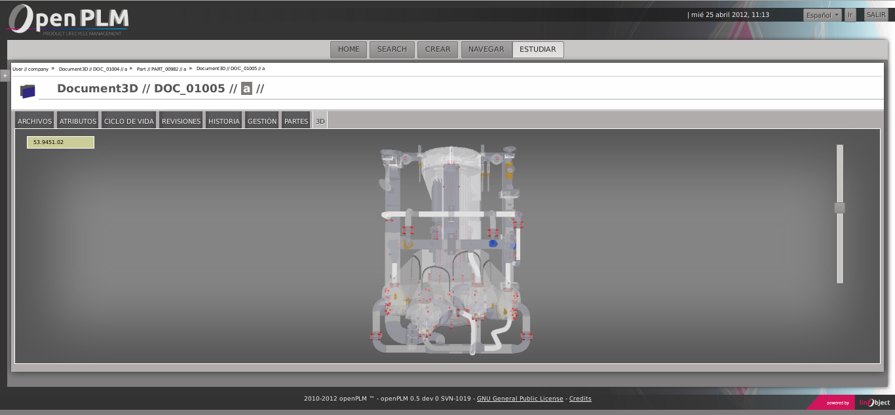

Table Of Contents
Previous topic
2. Functions specific to PLM object : PART
Next topic
1.3. Functions related to USER

2. Functions specific to PLM object : PART
1.3. Functions related to USER
Displays related Parts of the current document.
Displays files uploaded in the current document.
3DDocument is a type of document with all the functions related to the sub-class of PLMObject , Document. It’s used to describe the solid geometry of an object. This geometry is usually defined in STEP files ( extension .step or .stp) .
If the document is a 3D document and contains STEP files, a 3D view is generated using these files.
Here is an example of 3D view :
